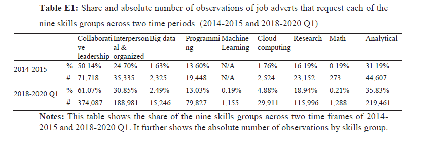
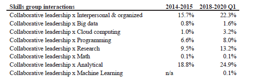
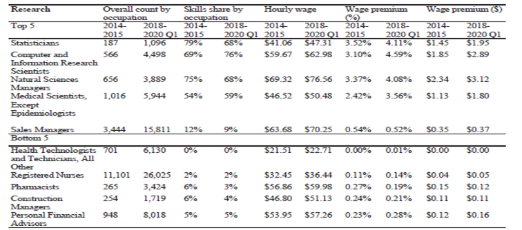

What Skills Pay More? Insights into Evolving Skill Demand and Wage Returns for Professional Workers
In a world where rapid advancements in AI and Technology are reshaping industries and accelerating shifts in the labor market, understanding how these changes are redefining the skills rewarded today is crucial for both workers and employers. The study adopted an approach focusing on the research of the evolving nature of work and the changing demand for skills. It examined two key periods: 2014-2015, marking the onset of the fourth industrial revolution, and 2018 to the first quarter of 2020, summarizing its progression using job flow data of professionals in the United States.
The study aims to analyze how the value or price of specific skills has evolved and how the need (or Demand) for these skills has shifted in the labor market. For example: in the early 2000 knowing the use of Microsoft Office was a valuable skill for many office jobs, but now such skills are considered basic and expected in most professional roles, with no or little wage premium, instead advanced skills in cloud computing, big data analytics or AI are in high demand and command much higher wages.
The data on demand for skills was obtained from online job advertisements posted on Linkup, focusing on ads for professional jobs, which made up 52.5% of all the job ads they studied. The keywords for skills were developed by filtering job ads and conducting a literature review. The initial list was narrowed to the most relevant skills and then expanded by adding related skills using pointwise mutual information (PMI) to identify strong associations between skills. Synonyms were grouped into categories, resulting in 166 keywords. Principal Component Analysis (PCA) was then used to analyze patterns among these keywords, reducing them to 9 distinct skill groups.
These 9 skills were categorized into cognitive and non-cognitive groups. Of the 9, 2 were classified as non-cognitive skills: collaborative leadership and interpersonal & organized skills. The remaining 7 were cognitive skills: big data, Cloud computing, Programming, Machine learning, Research, Mathematics, and Analytical skills. Between 2014 and Q1 2020, a total of 1.3 million job postings were analyzed using Bidirectional Encoder Representations from Transformers (BERT), a machine-learning method for natural language processing. BERT classified the job descriptions into five categories: responsibilities, skills, education, legal requirements, and others.

It highlights that the non-cognitive skill 'collaborative leadership' (including attributes such as strategic thinking, leadership, influence, collaboration, creativity, negotiation, and coaching) increased from 50.14% in the first period to 61.07% in the second period. Similarly, the 'interpersonal and organizational' skill rose from 25% in the first period to 30% in the second period.
The study also analyzed the interaction between each skill with the other 8 skill groups to analyze the nonlinear returns to skills groups and their interaction refers to studying how the relationship between skills and earning is more complex than a simple direct increase or decrease.

The table provides a snapshot of the interactions for 'collaborative leadership' and 'research' skills. Such as the interaction between 'collaborative leadership' and 'research' grew by 3.7 percentage points, from 9.5% to 13.2%. This highlights how, with increasing automation, the complementarity between social skills (such as collaborative leadership) and cognitive skills (like research) is growing. For instance, financial analysts now need to combine technical skills with strong collaboration skills including teamwork and communication skills. While algorithms handle the heavy data lifting, analysts must interpret the results and explain them to clients.
To align the skills group data with wage data, the job data obtained from Linkup was matched with wage data from the U.S. Bureau of Labor Statistics (BLS), organized by Standard Occupation Classification (SOC) codes. This enabled the study to link job postings with corresponding wage data for the same occupation and location.

The table shows the top 5 and bottom 5 occupations occurring in the field of research such as the share of skills of Computer and Information Research scientists rose to 69% from 1st period to 76% in 2nd period, showing the rise in hourly wages from $59.67 to $62.98.
In this study, the researchers first analyzed how the share of each skill group correlates with hourly wages, using a regression model that controlled for factors like education, experience, industry, and state demographics, and to explore how interactions between the nine skill groups influenced wages, focusing on how these skills might complement one another. To do this, they used a Lasso regression model, which selects the most relevant variables by minimizing prediction errors. This deeper analysis revealed how skill combinations, especially in the context of automation and technological change can impact wage growth. By examining these interactions across two key time periods, the study sheds light on how the evolving demand for skills is shaping the future of work.
In the results, we observe a critical connection between skills and wages. Non-cognitive skills, such as collaborative leadership and interpersonal & organizational skills, show different impacts on wages. Collaborative leadership skills have gained importance, leading to a 0.3% wage increase for a 10% rise in these skills by 2020. In contrast, the interpersonal & organizational skill group was associated with a 0.73% drop in wages. For example, time management, which is part of this skill group, has seen declining demand as automation reduces the need for such skills.
When it comes to cognitive skills, the demand for advanced tech skills like machine learning saw the most significant wage increase, with a 10% rise in this skill boosting wages by 5.83% between 2018 and Q1 2020. We also found that the return on data science skills is constantly evolving, but the legacy skills associated with it, such as 'big data,' initially contributed to a 1.85% wage increase in 2014-15. However, by 2018-20, these same skills led to a 1.21% decrease in wages, highlighting how quickly technology evolves and the importance of staying current in the fast-paced digital economy.
Conclusion
The study showed a noticeable shift in the value of skills over time specifically collaborative leadership has become increasingly important, correlating with a positive wage premium. The emphasis on this skill has increased in modern workplaces because mastering this skill not only drives individual and organizational performance but also fosters an inclusive environment where innovation thrives.
We also found that the return on data science skills is constantly evolving, but the legacy skills associated with it, such as 'big data,' initially contributed to a 1.85% wage increase in 2014-15. However, by 2018-20, these same skills led to a 1.21% decrease in wages, highlighting how quickly technology evolves and the importance of staying current in the fast-paced digital economy.
Personal Opinion
Reflecting on the findings of this study, understanding the shift in demand for skills is crucial because, in a world where skills requirements are rapidly changing, businesses can use these insights into hiring practices with the evolving market, focusing on skills like collaborative leadership and current data science competencies. The study also highlighted that labor shortages are often caused by a lack of job-relevant skills rather than a lack of workers. So, by identifying and investing in skills that drive wage premiums and also align with market needs, both employers and individuals can better navigate the complexities of the fourth industrial revolution.
Research Paper: What Skills Pay More? The Changing Demand and Return to Skills for Professional Workers — Cecily Josten, Helen Krause, Grace Lordan, Brian Yeung (IZA Discussion Paper No. 16755).